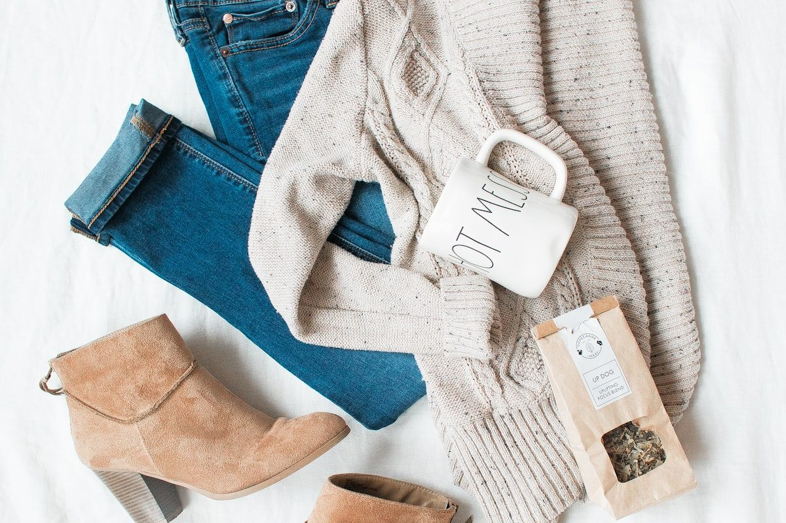

Perpetual Calendar 1461-Day Memory
The mechanical computation of Gregorian calendar irregularities and leap year gearing.

Time, in its astronomical reality, is not a simple linear progression of identical days. Our Gregorian calendar is an intricate, historically patched construct designed to reconcile the Earth's orbital period around the Sun (approximately 365.2422 solar days) with integer human days. Months vary from 28 to 31 days, and every fourth year introduces a leap day to prevent seasonal drift. In haute horlogerie, mastering these calendar irregularities mechanically—without microprocessors, batteries, or digital logic—is the domain of the Quantième Perpétuel (Perpetual Calendar). It is a complication that endows a mechanical timepiece with a genuine mechanical memory spanning 1,461 days.
1. The Calendar Problem: Reconciling Nature and Gear Trains
A standard mechanical date watch has a date wheel with 31 teeth that advances by one tooth every 24 hours. Consequently, on the first of March, May, July, October, and December, the wearer must manually pull the crown to skip past nonexistent days (the 31st of February, April, June, etc.).
The Annual Calendar (Quantième Annuel) solves months of 30 and 31 days automatically, but remains blind to February, requiring manual adjustment once a year on March 1st.
The Perpetual Calendar stands supreme: it knows whether the current month has 28, 29, 30, or 31 days. Once properly set, a perpetual calendar requires zero manual intervention for an entire century, advancing automatically from February 28 (or February 29 during a leap year) directly to March 1st at the stroke of midnight.
"A perpetual calendar is mechanical artificial intelligence: a multi-tiered architecture of levers, cams, and felt springs calculating the quadrennial cycle of leap years through the unhurried rotation of steel and gold."
2. The Architecture of the 1,461-Day Memory Wheel
How does a mechanical calibre remember a four-year cycle encompassing 1,461 days? The solution lies in the grand lever (grand levier) and the 48-month satellite program wheel.
Beneath the dial of our Calibre MH-03 sits a dedicated program wheel featuring 48 notches cut along its perimeter, corresponding to the 48 months of the full leap year cycle (3 normal years + 1 leap year):
- Months with 31 days are represented by high sectors or shallow notches.
- Months with 30 days are represented by deeper notches.
- Standard 28-day Februaries are represented by deep notches of specific depth.
- The leap year February is represented by a slightly shallower notch corresponding to 29 days.
Every day at midnight, the date mechanism advances. As the end of the month approaches, the sensing beak of the grand lever drops into the program wheel to probe the depth of the current month's notch. The physical depth to which the beak falls determines the stroke of the date advancing pawl. If the beak falls into the deepest notch (February of a non-leap year), the pawl advances through four teeth in a single instantaneous jump at midnight, skipping from 28 to 29, 30, 31, and landing squarely on the 1st of March.
3. The Grand Leveier and Maltese Cross Stabilization
The mechanical energy required to jump multiple calendar displays—day, date, month, and moonphase—simultaneously at midnight cannot be drawn directly from the gear train without causing severe balance amplitude drop.
Our manufacture overcomes this hurdle through an accumulated energy release system. Throughout the 24 hours of the day, a cam driven by the hour wheel slowly lifts a heavy, counterweighted grand lever against a calibrated steel spring. At precisely 23:59:58, the cam drops off its cliff edge.
The released kinetic energy snaps the grand lever downward, driving all calendar indicators instantaneously in under 15 milliseconds. To prevent momentum overshoot (such as the date disc bouncing from the 1st to the 2nd), each display disc is stabilized by precision ruby-roller jumper springs and micro-milled Maltese cross stopworks that lock each disc rigidly in place the microsecond it reaches its destination.
4. The Astronomical Moonphase: The 122-Year Gear Ratio
A perpetual calendar is aesthetically incomplete without an astronomical moonphase indicator displaying the synodic lunation cycle (the interval between two identical lunar phases, averaging 29 days, 12 hours, 44 minutes, and 2.8 seconds).
Standard commercial watches approximate this cycle using a simple 59-tooth moon disc driven by an hour wheel advancing one tooth every 24 hours. Because 59 teeth divided by two lunations yields 29.5 days, this shortcut introduces an error of 44 minutes per month, accumulating a full day of error every 2.7 years.
In our Calibre MH-03, we utilize a high-precision astronomical wheel train featuring a 135-tooth driving wheel calculated according to the astronomical formula derived by Swiss mathematicians. This microscopic gear ratio reduces the discrepancy to less than 57 seconds per lunar cycle. The moonphase on a Mechanical Hour timepiece will deviate by a single day only after 122 years and 45 days of uninterrupted operation.
5. The Secular Correction: The Century Leap Year Anomaly
While a perpetual calendar handles standard four-year leap cycles with absolute mastery, it is bounded by the rules of the Gregorian calendar introduced by Pope Gregory XIII in 1582. Under Gregorian reform:
Centurial years are only leap years if they are evenly divisible by 400.
Consequently, while the year 2000 was a leap year, the upcoming year 2100 will be a common year with only 28 days in February. Standard perpetual calendars assume 2100 is a leap year and will advance to February 29. Therefore, on March 1, 2100, all traditional perpetual calendars worldwide will require a single manual correction by a watchmaker.
For patrons desiring complete multi-century autonomy, our Piece Unique department constructs secular perpetual calendars (calendriers séculaires). These ultra-complex calibres incorporate an auxiliary 400-year Maltese wheel that rotates once every four centuries, mechanically suppressing the leap day in the years 2100, 2200, and 2300, guaranteeing absolute calendar autonomy until the year 2400.
6. The Kinematic Geometry of the 48-Month Satellite Wheel
The core computational processor of our perpetual calendar is the 48-month satellite wheel. To understand its mechanical elegance, one must examine its rotational speed:
The wheel completes one full revolution once every four years (1,461 days). This translates to an angular rotational velocity of approximately 0.246 degrees per day—a movement so slow that it is imperceptible to the naked eye.
The circumference of this disc is micro-milled with forty-eight distinct radial depths corresponding to the month sequence:
- Months of 31 Days (7 per year): The perimeter presents a raised concentric arc (radius $R_1 = 6.20$ mm). When the grand lever feeler rests on this arc, it allows the date advancing wheel to advance through exactly one tooth from 30 to 31.
- Months of 30 Days (4 per year): The perimeter features a shallow notch ($R_2 = 5.60$ mm). The feeler drops lower, allowing the date wheel to skip the 31st and jump directly to the 1st.
- Standard February (3 per 4-year cycle): The perimeter features a deep notch ($R_3 = 4.80$ mm). The feeler drops deeply, enabling the grand lever to sweep across four full teeth at midnight on February 28th.
- Leap Year February (1 per 4-year cycle): The perimeter presents a calibrated intermediate notch ($R_4 = 5.20$ mm). The feeler drops just enough to permit advancement to the 29th, before triggering the jump to March 1st on the following midnight.
7. Instantaneous vs. Dragging Calendar Transitions
In commercial calendar watches, date discs begin creeping slowly around 21:00, gradually shifting the numeral through the dial window until completing the transition around 01:30. In haute horlogerie, this sluggish "dragging" display is considered an unacceptable compromise.
The Calibre MH-03 utilizes an instantaneous jumping display. As the clock ticks toward midnight, the movement loads an energy accumulation spring. At precisely 23:59:59, an escapement trigger trips, and within 12 milliseconds—faster than the blink of a human eye—all four indicators (day, date, month, and leap year) snap simultaneously to their new coordinates. The visual impact on the collector's wrist is breathtaking: instantaneous chronometric truth delivered with clockwork precision.